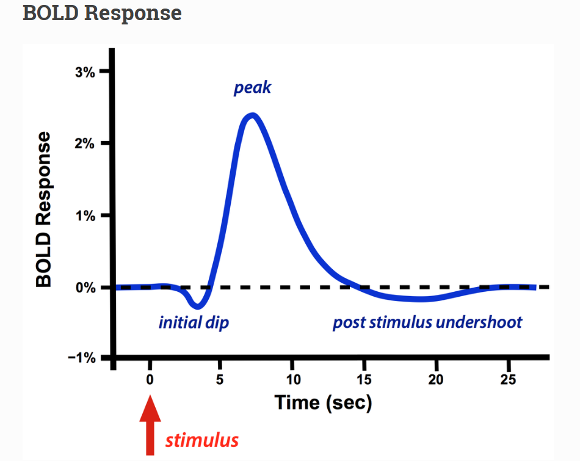

About Cerebral Cinema
Understanding how the human brain processes naturalistic
movies through multimodal deep learning.
Motivation
Humans effortlessly integrate visual scenes, spoken dialogue,
facial expressions, and contextual information while watching a
movie. Understanding how these multimodal signals are represented
inside the brain remains one of the central challenges in cognitive
neuroscience.
Cerebral Cinema aims to bridge artificial intelligence and
neuroscience by learning mappings between synchronized movie
stimuli and whole-brain fMRI activity.
BOLD Signal
Functional MRI measures neural activity indirectly through Blood
Oxygen Level Dependent (BOLD) signals. When neurons become active,
their oxygen consumption changes, causing local variations in blood
oxygenation that can be detected using MRI scanners.

Project Objectives
✅ Predict brain activity from multimodal movie stimuli
✅ Learn shared visual and linguistic representations
✅ Build a Transformer-based multimodal decoder
✅ Develop an interactive brain visualization website